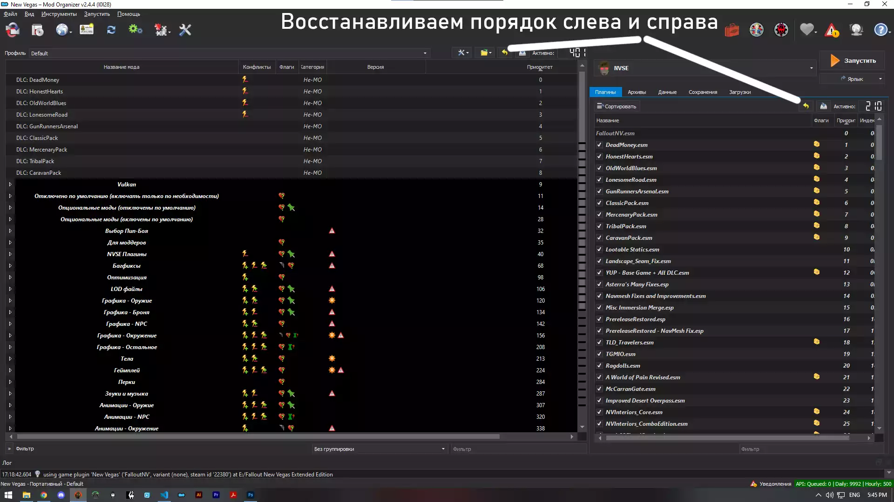

ЧАВО/FAQ
В данном разделе Вы можете найти ответы на часто задаваемые вопросы.
Как восстановить порядок загрузки?
Жмем на стрелочки, выбираем самый свежий пресет.

Как включить полноэкранный режим (возможность менять разрешение)?
Отключите
OneTweak в NVSE плагинах и измените значение
"BFull Screen" на 1 в
falloutcustom.ini через
иконку пазлов в мод менеджере.
Как включить оконный режим?
Отключите OneTweak в NVSE плагинах.
Как вернуть показ требований к навыку в диалогах?
Включить "Отображение уровня навыка в диалогах" в разделе
"НАСТРОЙКИ ТВИКОВ".
Что такое С/В?
Стоимость за вес. Например предмет стоит 20, а весит 10. С/В будет низкое - 2. А
другой предмет стоит 100, а весит 2 и соответственно С/В выше - 50.
Чем выше С/В тем лучше, так как предмет с этим высоким показателем
будет весить
мало, а стоить
много.
Как вернуть маркеры врагов на компас?
Включить "Маркеры врагов на компасе" в разделе "НАСТРОЙКИ ТВИКОВ".
Где именно лежат вещи курьерского арсенала?
Как убрать ограничение уровня?
Не советую этого делать, достичь максимального уровня и так не легко.
В
мод-менеджере нажмите на кнопку "Данные (Data)" правее от плагинов
и откройте папку "config", откройте файл
"Jsawyer Ultimate.ini" и измените значение
"iLevelCap" с 35 на желаемое.
Как получать перк каждый уровень?
Не советую этого делать, ввиду баланса.
В мод-менеджере нажмите на кнопку
"Данные (Data)" правее от плагинов и откройте папку
"config", откройте файл "Jsawyer Ultimate.ini" и
измените значение "iLevelPerkInterval" с 2 на 1.
Как отключить влияние харизмы на диалоги?
В мод-менеджере в левой панели отключите мод
"Charisma Tweaks (NVSE)".
Как увеличить переносимый вес?
В мод-менеджере нажмите на кнопку
"Данные (Data)" правее от плагинов и откройте папку
"config", откройте файл "Jsawyer Ultimate.ini" и
измените значение
"fCarryWeightBase" (переносимый вес без учета силы)
на желаемое.
Как увеличить кол-во получаемого опыта?
В мод-менеджере нажмите на кнопку
"Данные (Data)" правее от плагинов и откройте папку
"config", откройте файл "Jsawyer Ultimate.ini" и
измените значение "bLowerXPRewards" с 1 на 0.
Как убрать смену типа боеприпасов при двойном нажатии на кнопку перезарядки?
Включить "Смена патронов двойным нажатием" в разделе "НАСТРОЙКИ
ТВИКОВ".
Как сделать игру светлее?
Как запустить лаунчер игры?
В мод-менеджере нажмите на выпадающий список слева от кнопки
"Запустить", выберите "Fallout Launcher" и
запускайте.